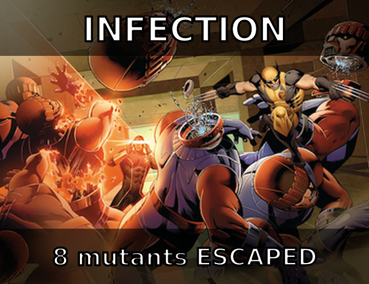

Qui suis-je ?

Guillaume MIRANDA
Freelance chez Edenred
Passionné de code, de DX et de testing.
github.com/mirandaguillaume guillaumemiranda.bsky.social
Les tests
c'est chiant.

Le scénario du quotidien
Minimum required: 80%
✓ Coverage: 81%
✓ Pipeline passed
Le scénario du CLAUDE-tidien
Minimum required: 80%
✓ Coverage: 81%
✓ Pipeline passed
L'histoire qui fait mal
// Le code — un "petit refacto" a supprimé l'arrondi
return round($price * $quantity * (1 + $taxRate), 2); // ← avant
return $price * $quantity * (1 + $taxRate); // ← après// Le test — assertion exacte, valeurs rondes
public function testTotalWithTax(): void
{
// 10.00 * 5 * 1.20 = 60.0 — avec ou sans round()
$this->assertSame(60.0, $this->calc->total(10.00, 5, 0.20));
}
Avec des prix ronds, round() ne change rien.
Avec 19.99 × 3 × 1.055 = 63.268… → le centime manque.
Les tests générés par LLM → 20% de mutation score en moyenne — Huang et al., 2025
Et si on avait un outil qui supprime le
round() pour voir si le test s'en rend compte ?
Et si on sabotait le code ? 🔧
c'est qu'ils ne surveillaient rien.
Bonne nouvelle : on peut automatiser ce stagiaire.
Mutation Testing — le principe
Comme les X-Men, mais dans votre codebase. Et on veut les éliminer.
Killed = Wolverine neutralisé par vos tests | Escaped = Mystique est passée entre les mailles
MSI (Mutation Score Indicator) = % de mutants éliminés
Le vrai bulletin de notes de vos tests — pas le coverage
À quoi ressemble un mutant ?
Ceux-là, on peut les voir à l'œil.
Les suivants, non.
Le silencieux 🌀 Nightcrawler
function getActiveUsers(array $users): Generator
{
foreach ($users as $user) {
if ($user->isActive()) {
yield $user;
}
}
}function getActiveUsers(array $users): Generator { foreach ($users as $user) { if ($user->isActive()) {- yield $user;+ // supprimé } } }
public function testFiltersOutInactiveUsers(): void
{
$users = [new User('Bob', active: false), new User('Eve', active: false)];
$result = iterator_to_array(getActiveUsers($users));
$this->assertEmpty($result);
$this->assertCount(0, $result);
}TEST ✅ Assertions exactes, test solide
Avec 0 actifs, yield n'est jamais atteint. Supprimé ou pas → même résultat.
L'imposteur 🎭 Mystique
function extractTags(array $articles): array
{
$tags = array_merge(...array_map(fn($a) => $a->getTags(), $articles));
return array_unique($tags);
}function extractTags(array $articles): array { $tags = array_merge(...array_map(fn($a) => $a->getTags(), $articles));- return array_unique($tags);+ return $tags; }
public function testExtractTagsFromArticles(): void
{
$articles = [
new Article(tags: ['php', 'testing']),
new Article(tags: ['ci', 'devops']),
];
$result = extractTags($articles);
$this->assertCount(4, $result);
$this->assertContains('php', $result);
}TEST ✅ Count exact, valeurs vérifiées
Fixtures sans doublons → array_unique est un no-op. En prod, les tags se répètent.
Le parasite 🧤 Rogue
function archiveOrder(Order $order): Order
{
$archived = clone $order;
$archived->setStatus('archived');
$archived->setArchivedAt(new \DateTimeImmutable());
$this->repository->save($archived);
return $archived;
}function archiveOrder(Order $order): Order {- $archived = clone $order;+ $archived = $order; $archived->setStatus('archived'); $archived->setArchivedAt(new \DateTimeImmutable()); $this->repository->save($archived); return $archived; }
public function testArchiveOrderSetsStatusAndDate(): void
{
$order = new Order(id: 42, status: 'active');
$archived = $this->service->archiveOrder($order);
$this->assertSame('archived', $archived->getStatus());
$this->assertNotNull($archived->getArchivedAt());
}TEST ✅ Status et date vérifiés
Le test vérifie $archived, jamais $order. Sans clone, les deux sont le même objet.
L'assassin 🗡️ Wolverine
function processPayment(Order $order): void
{
try {
$this->gateway->charge($order->total);
} catch (InsufficientFundsException $e) {
$this->logger->error('Payment failed', ['order' => $order->id]);
throw $e;
}
$order->setStatus('paid');
}function processPayment(Order $order): void { try { $this->gateway->charge($order->total); } catch (InsufficientFundsException $e) { $this->logger->error('Payment failed', ['order' => $order->id]);- throw $e;+ // supprimé } $order->setStatus('paid'); }
public function testSuccessfulPaymentSetsStatusToPaid(): void
{
$order = new Order(id: 1, total: 50.0);
$this->gateway->method('charge'); // pas d'exception
$this->service->processPayment($order);
$this->assertSame('paid', $order->getStatus());
}TEST ✅ Happy path, assertion exacte
Le test ne provoque jamais l'exception → throw jamais atteint. En prod : commandes gratuites.
Le naïf 🎆 Jubilee
function getDisplayName(User $user): string
{
return $user->nickname
?? $user->fullName
?? 'Utilisateur anonyme';
}function getDisplayName(User $user): string {- return $user->nickname- ?? $user->fullName- ?? 'Utilisateur anonyme';+ return $user->nickname; }
public function testDisplayNameReturnsNickname(): void
{
$user = new User(nickname: 'devgirl', fullName: 'Alice Martin');
$this->assertSame('devgirl', getDisplayName($user));
}TEST ✅ Valeur exacte vérifiée
Le user a un nickname → avec ou sans ??, même résultat. Crash sur les 2% sans pseudo.
L'inverseur 🧲 Magneto
function accessDashboard(User $user): Response
{
if (!$user->isBanned()) {
return $this->render('dashboard');
}
return $this->render('banned_notice');
}function accessDashboard(User $user): Response {- if (!$user->isBanned()) {+ if ($user->isBanned()) { return $this->render('dashboard'); } return $this->render('banned_notice'); }
public function testActiveUserCanAccessDashboard(): void
{
$user = new User(banned: false);
$response = $this->controller->accessDashboard($user);
$this->assertSame(200, $response->getStatusCode());
}TEST ✅ Status code vérifié
Les deux branches rendent un 200. Le test vérifie le status, pas le contenu.
Le dyslexique ⚡ Quicksilver
function getShippingCost(Order $order): float
{
return $order->isExpress()
? $order->weight * 2.50 // tarif express
: $order->weight * 1.00; // tarif standard
}function getShippingCost(Order $order): float { return $order->isExpress()- ? $order->weight * 2.50 // express- : $order->weight * 1.00; // standard+ ? $order->weight * 1.00 // (interverti)+ : $order->weight * 2.50; // (interverti) }
public function testDigitalGoodsHaveNoShippingCost(): void
{
$order = new Order(weight: 0.0, express: false);
$this->assertSame(0.0, getShippingCost($order));
}TEST ✅ Assertion exacte, cas edge réaliste
Avec weight = 0, les deux branches donnent 0.0. Le mutant survit.
Coverage ≠ qualité
function applyDiscount(float $price, float $rate): float
{
if ($rate > 0.5) {
throw new \InvalidArgumentException('Max 50%');
}
return $price * (1 - $rate);
}Test A
$result = applyDiscount(100, 0.2);
$this->assertIsFloat($result);
Coverage : 100%
MSI : 0%
Test B
$result = applyDiscount(100, 0.2);
$this->assertSame(80.0, $result);
Coverage : 100%
MSI : 85%
Assez de théorie.
Un exemple concret
Spoiler : ça va piquer. 💉
Démo — Le code 📝
Le code
class PriceCalculator
{
public function calculate(
float $price,
float $tax,
?float $discount = null
): float {
$total = $price * (1 + $tax);
if ($discount !== null
&& $discount > 0) {
$total -= $total * $discount;
}
return round($total, 2);
}
}Le "test"
public function testCalculate(): void
{
$calc = new PriceCalculator();
$result = $calc->calculate(
100, 0.2, 0.1
);
$this->assertIsFloat($result);
$this->assertGreaterThan(
0, $result
);
}Coverage : 100% ✓ — Mais est-ce que ça teste vraiment quelque chose ?
Démo — Infection parle 🦠
Killed: 3
Escaped: 8
MSI : 25% | Coverage : 100%

Démo — On corrige 💪
public function testCalculateWithDiscount(): void
{
$calc = new PriceCalculator();
$result = $calc->calculate(100, 0.2, 0.1);
$this->assertSame(108.0, $result); // prix exact attendu
}
public function testCalculateWithoutDiscount(): void
{
$this->assertSame(120.0,
(new PriceCalculator())->calculate(100, 0.2)
);
}
public function testIgnoresNegativeDiscount(): void
{
$result = (new PriceCalculator())->calculate(100, 0.2, -0.1);
$this->assertSame(120.0, $result); // discount ignoré si <= 0
}Escaped: 1 (mutant équivalent)
Ce qu'on vient de voir
Mutants évidents 👀
On aurait pu les voir à l'œil.
+ → -, true → false…
Utiles pour comprendre le concept.
Mutants subtils 🫣
Sans outil, ils passent inaperçus.
&& → ||, suppression d'un throw…
C'est là que le mutation testing brille.
C'est pas magique non plus
🎭 Les faux amis
Le code a changé, le comportement non → impossible à tuer
Du bruit, pas de valeur
⏱️ Les coûts
Chaque mutant = relancer les tests
Certains mutants cassent le flux → timeouts
L'IA créait le problème. Elle peut aussi aider à le résoudre.
L'IA à la rescousse 🤖
— FSE 2025
— arXiv 2406.09843
— Dakhel et al., 2024
La boucle est bouclée.
En pratique, dans votre CI
Ne lancez pas Infection sur tout le projet.
vendor/bin/infection --git-diff-filter=AM --min-msi=70Uniquement les fichiers ajoutés ou modifiés → rapide, ciblé.
📏
Coverage
= quantité
Quelles lignes sont exécutées
🎯
MSI
= qualité
Est-ce que les tests détectent les changements
Pas que PHP — l'écosystème
Le plus mature, intégré CI, profils
Support Jest, Vitest, Mocha, Karma
Plugins Maven & Gradle, rapide
Simple, cache intelligent, pytest natif
Même famille que Stryker JS
AST-based, RSpec intégré
🦠
Merci !
📄 Infection : infection.github.io
📄 MuTAP : github.com/ExpertiseModel/MuTAP
📄 Meta ACH : arXiv 2501.12862
Questions ? 🙋
Crédits
🦸 Personnages & images X-Men — © Marvel Entertainment.
Portraits via Wikipédia / Wikimedia Commons · Sentinelle : couverture X-Men: Schism (Marvel). Usage éducatif et illustratif.
🧪 Mutation testing — Infection — infection.github.io
🎞️ Slides — reveal.js